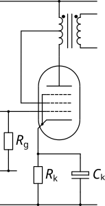

| Circuit Parameter | Operating Point | ||
|---|---|---|---|
| Field 1 | Value 1 | ||
| Field 2 | Value 2 | ||
| Field 3 | Value 3 | ||
| Field 4 | Value 4 | ||
| Field 5 | Value 5 | ||
| Field 6 | Value 6 | ||
| Field 7 | Value 7 | ||
| Field 8 | Value 8 | ||
The Ultralinear Single Ended Output Stage is (as the name suggests), a way of improving the linearity and lowering the distortion of a pentode output stage. It does this by biasing a pentode so that its characteristics are somewhere between a pentode and a triode. In general this is more likely to be applicable to HiFi amplifiers and is likely to be a requirement for single ended pentode HiFi amplifiers due to the inherent non-linearity of these tubes as they approach cut off.
